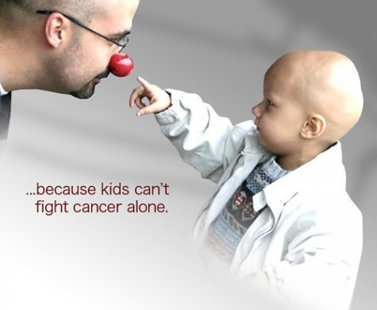
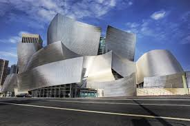

As I was searching for colleges, I was surprised at the many choices I had to pick for my top 3 career choices.
As I was researching for fashion designer careers, I found out somethings I did not know about the career choice. I was surprised to see that fashion designers get pay less that I thought. An average fashion designer is paid usually from $48,741 to $57,699. I thought that they would be paid a bit more considering the trouble they have to go through to make clothing, but the money is not really a big deal to me. I was also very surprised at the many major for fashion. Not only is there fashion design, but also merchandising, marketing and textiles. The amount of time that fashion designers spend in training also surprised me because after college with either a 4 year bachelor's degree or a 2 year associates degree they have the option to continue learning and training for 2-3 years. I had chosen SCAD as my fashion choice of school and they have a really good art and fashion programs. Except I like how they allow everyone the same opportunity as anyone else and their tuition is the same for all the students even if its in-state or out-of-state.

I know that it takes a long time to finally get to becoming an oncologist, but many different things that had me surprised was that the graduate students have a minimum of 7 years for training after a 4-year Doctor of Medicine (M.D.) or Doctor of Osteopathic Medicine (D.O.) degree. I was also surprised at the salary for oncologist ranging from about $237,304 to $375,721. My choice for medical school was MUSC and the in-state tuition had me a bit surprised per year.

I always wanted to be an architect because my father is in construction and my brother is in engineering so i always thought that being an architect and i was surprised at some-of the things that they offer architects. I like that some schools offer and encourage architect students to intern while they are still in school and that they have to have a minimum of 3 years for training before working as an active architect
